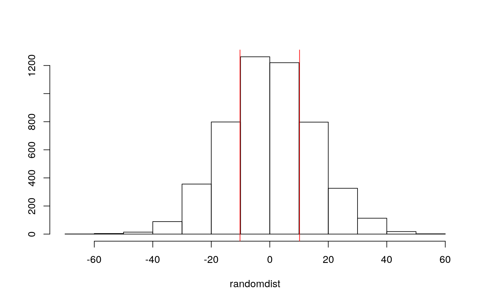
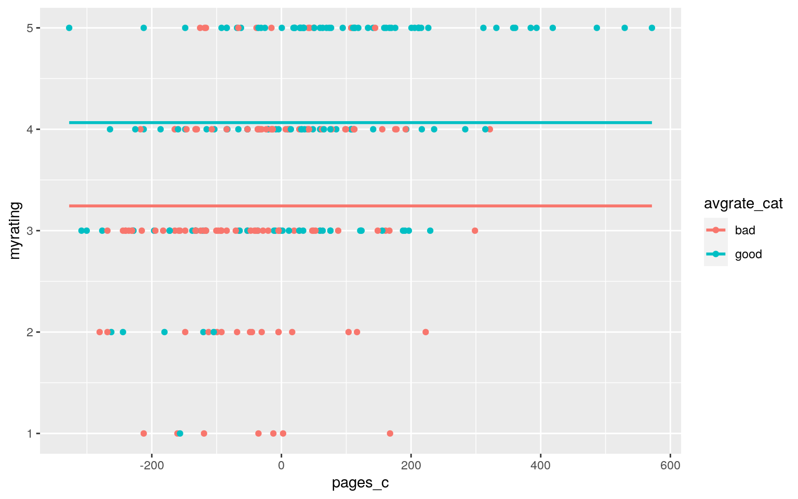
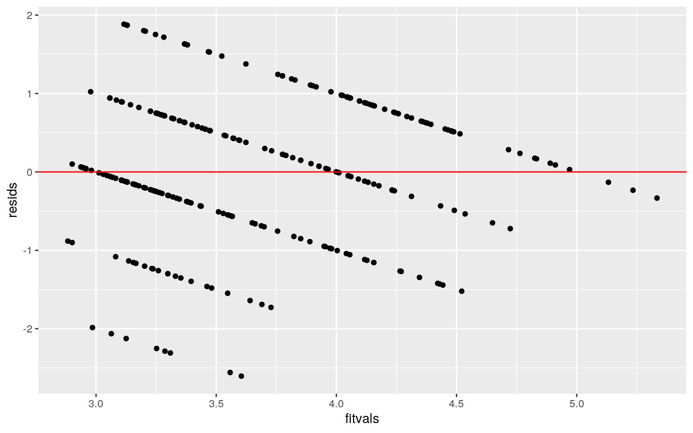
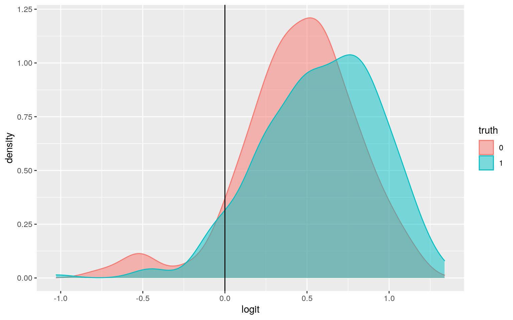
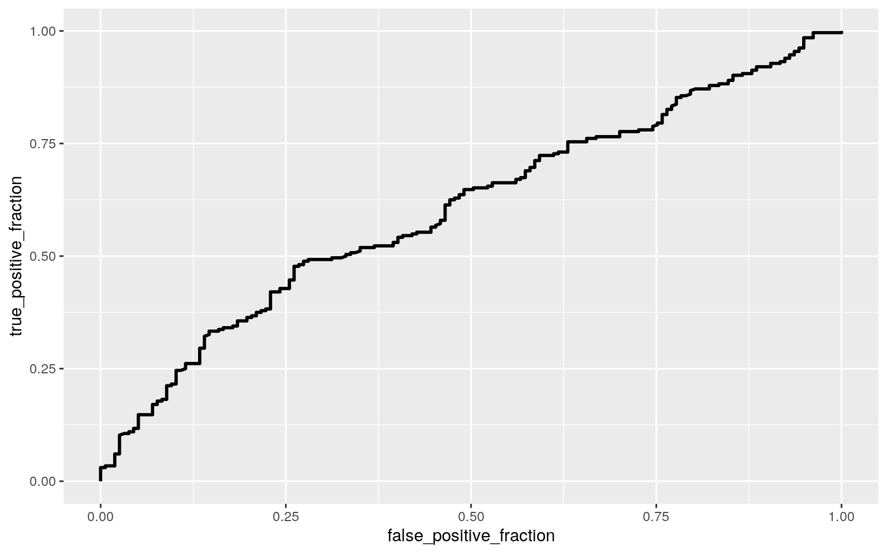

I downloaded my goodreads library information to use as my dataset. There are 421 observations, each representing a different book.
library(readr)
goodreadsdata <- read_csv("goodreadsdata.csv",
col_types = cols(avgrating = col_number(),
myrating = col_number(), pages = col_number(),
pubyear = col_number()))
goodreads <- goodreadsdata
glimpse(goodreads)## Rows: 421
## Columns: 7
## $ title <chr> "Charlotte's Web", "The Shining", "The
Complete Sherlock Holmes", "Will My Cat …
## $ myrating <dbl> 0, 0, 0, 4, 4, 4, 3, 2, 5, 3, 3, 2, 3,
3, 2, 3, 5, 4, 3, 4, 4, 2, 4, 3, 4, 2, 3…
## $ avgrating <dbl> 4.18, 4.23, 4.48, 4.15, 4.13, 4.18,
4.39, 3.54, 4.43, 4.40, 4.36, 4.17, 4.06, 4…
## $ binding <chr> "Paperback", "Paperback", "Hardcover",
"ebook", "Paperback", "Audiobook", "eboo…
## $ pages <dbl> 184, 659, 1077, 237, 225, 257, 203, 563,
315, 219, 208, 220, 208, 224, 78, 256,…
## $ pubyear <dbl> 1952, 1977, 1927, 2019, 1993, 2019,
2012, 2006, 2012, 2011, 2010, 1983, 2002, 2…
## $ shelf <chr> "currently-reading", "currently-reading",
"currently-reading", "read", "read", …The "title" variable contains book titles for each book I have added to my goodreads library. The "myrating" variable is the star rating I gave the book on a scale of 0-5. The "avgrating" variable lists the average rating for the book based on all community ratings. The "binding" variable lists whether a book is a paperback, hardcover, ebook, or audiobook. The "pages" variable is a count of the number of pages in the book. The "pubyear" variable lists the year the book was initially published. The "shelf" variable states whether I have read, want to read, or am currently reading the book.
group <- goodreads$binding
dvs <- goodreads %>% select(avgrating, pages, pubyear)
sapply(split(dvs, group), mshapiro_test)## Audiobook ebook Hardcover Paperback
## statistic 0.6648097 0.4515287 0.5372794 0.4616239
## p.value 4.742278e-05 9.812528e-15 6.981628e-20
2.827215e-23man <- manova(cbind(avgrating, pages, pubyear)~binding, data = goodreads)
summary(man)## Df Pillai approx F num Df den Df Pr(>F)
## binding 3 0.14632 7.1273 9 1251 3.981e-10 ***
## Residuals 417
## ---
## Signif. codes: 0 '***' 0.001 '**' 0.01 '*' 0.05 '.' 0.1
' ' 1summary.aov(man)## Response avgrating :
## Df Sum Sq Mean Sq F value Pr(>F)
## binding 3 0.2339 0.077952 1.0698 0.3617
## Residuals 417 30.3865 0.072869
##
## Response pages :
## Df Sum Sq Mean Sq F value Pr(>F)
## binding 3 727430 242477 10.956 6.129e-07 ***
## Residuals 417 9229067 22132
## ---
## Signif. codes: 0 '***' 0.001 '**' 0.01 '*' 0.05 '.' 0.1
' ' 1
##
## Response pubyear :
## Df Sum Sq Mean Sq F value Pr(>F)
## binding 3 66053 22018 8.7616 1.202e-05 ***
## Residuals 417 1047915 2513
## ---
## Signif. codes: 0 '***' 0.001 '**' 0.01 '*' 0.05 '.' 0.1
' ' 1pairwise.t.test(goodreads$pages, goodreads$binding, p.adj="none")##
## Pairwise comparisons using t tests with pooled SD
##
## data: goodreads$pages and goodreads$binding
##
## Audiobook ebook Hardcover
## ebook 0.91921 - -
## Hardcover 0.00209 2e-07 -
## Paperback 0.03226 0.00026 0.02489
##
## P value adjustment method: nonepairwise.t.test(goodreads$pubyear, goodreads$binding, p.adj="none")##
## Pairwise comparisons using t tests with pooled SD
##
## data: goodreads$pubyear and goodreads$binding
##
## Audiobook ebook Hardcover
## ebook 0.7053 - -
## Hardcover 0.4142 0.4607 -
## Paperback 0.0099 9.3e-05 5.6e-05
##
## P value adjustment method: none1 - .95^16## [1] 0.5598733.05/(1+3+6+6)## [1] 0.003125A one-way MANOVA was conducted to determine the effect of book binding (paperback, hardcover, ebook, audiobook) on the three dependent variables average rating, page number, and publication year. The numeric variable quantifying my rating was not included because for all books I have not read the rating is zero and therefore largely dependent on whether or not I have read the book.
After testing for multivariate normality for each group, we reject the null hypothesis that the assumptions were met since each p value is less than 0.0001. Therefore, the assumptions were violated.
The MANOVA showed significant differences among book bindings for at least one of the dependent variables (Pillai trace = 0.15, pseudo F(91251) = 7.13, p < 0.0001).
The univariate ANOVAS were significant for the dependent variables page number and publication year (F(3,147) = 10.96, p < 0.0001 and F(3,147) = 8.76, p < 0.0001).
Post hoc pairwise t tests were done to determine which bindings differed in number of pages and publication year. For number of pages there is a significant difference between audiobooks and hardcovers (p = 0.002), ebooks and hardcovers (p < 0.0001), and ebooks and paperbacks (p = 0.0002). For publication year there is a significant difference between ebooks and paperbacks (p < 0.0001) and hardcovers and paperbacks (p < 0.0001). Since 16 tests were performed, the probability of having at least one type I error is 0.56 and the significance level was adjusted (bonferroni α = .05/16 = 0.0031).
nocurrentread <- goodreads %>% filter(shelf != "currently-reading")
nocurrentread %>% group_by(shelf) %>% summarize(means = mean(pages)) %>% summarize(meandiff = diff(means))## # A tibble: 1 x 1
## meandiff
## <dbl>
## 1 10.2randomdist <- vector()
for(i in 1:5000){
new <- data.frame(shelf = nocurrentread$shelf, pages = sample(nocurrentread$pages))
randomdist[i] <- mean(new[new$shelf=="to-read",]$pages)-mean(new[new$shelf=="read",]$pages)}
mean(randomdist>10.175 | randomdist < -10.175)## [1] 0.4972{hist(randomdist, main="", ylab = ""); abline(v = c(10.175, -10.175), col = "red")} For my randomization test, I measured whether there is a difference between the number of pages in the books I have read versus the books I want to read. The null hypothesis is that the mean page number for read and to-read books is the same. The alternative hypothesis is that the mean page number for read and to-read books is different. After conducting a randomized t test, we fail to reject the null hypothesis and conclude that there is not a significant difference in mean page number between read books and to-read books.
readbooks <- goodreads %>% filter(shelf == "read") %>% mutate(avgrate_cat = ifelse(avgrating>mean(avgrating), "good", "bad"))
readbooks$pages_c <- readbooks$pages - mean(readbooks$pages)
fit <- (lm(myrating ~ pages_c*avgrate_cat, data = readbooks))
summary(fit)##
## Call:
## lm(formula = myrating ~ pages_c * avgrate_cat, data =
readbooks)
##
## Residuals:
## Min 1Q Median 3Q Max
## -2.60461 -0.49539 -0.00844 0.69225 1.88374
##
## Coefficients:
## Estimate Std. Error t value Pr(>|t|)
## (Intercept) 3.3053468 0.0846055 39.068 < 2e-16 ***
## pages_c 0.0015075 0.0006633 2.273 0.0239 *
## avgrate_catgood 0.6708708 0.1157660 5.795 1.97e-08 ***
## pages_c:avgrate_catgood 0.0008680 0.0007989 1.087 0.2783
## ---
## Signif. codes: 0 '***' 0.001 '**' 0.01 '*' 0.05 '.' 0.1
' ' 1
##
## Residual standard error: 0.9038 on 260 degrees of
freedom
## Multiple R-squared: 0.2531, Adjusted R-squared: 0.2444
## F-statistic: 29.36 on 3 and 260 DF, p-value: < 2.2e-16ggplot(readbooks, aes(x=pages_c, y=myrating, group=avgrate_cat))+
geom_point(aes(color=avgrate_cat))+
geom_smooth(method = "lm", formula=y~1, se=F, fullrange=T, aes(color = avgrate_cat))
resids <- fit$residuals
fitvals <- fit$fitted.values
ggplot() + geom_point(aes(fitvals, resids)) +
geom_hline(yintercept = 0, color='red')
ks.test(resids, "pnorm", mean = 0, sd(resids))##
## One-sample Kolmogorov-Smirnov test
##
## data: resids
## D = 0.071534, p-value = 0.1341
## alternative hypothesis: two-sidedcoeftest(fit, vcov = vcovHC(fit))##
## t test of coefficients:
##
## Estimate Std. Error t value Pr(>|t|)
## (Intercept) 3.30534680 0.09408869 35.1301 < 2.2e-16 ***
## pages_c 0.00150747 0.00067268 2.2410 0.02587 *
## avgrate_catgood 0.67087083 0.12281657 5.4624 1.098e-07
***
## pages_c:avgrate_catgood 0.00086800 0.00077702 1.1171
0.26499
## ---
## Signif. codes: 0 '***' 0.001 '**' 0.01 '*' 0.05 '.' 0.1
' ' 1For my linear regression, I created a new variable that characterizes books as "good" or "bad" based on the average community rating. Books with community ratings above the mean are "good" and books with community ratings below the mean are "bad".
The prediction for my rating of a bad book with a mean number of pages is 3.305 stars. For every one page increase in page length, my predicted rating for bad books increases by 0.002 stars. For books with an average number of pages, my rating for good books is 0.671 times greater than my rating for bad books. The slope of page number on my rating for good books is 0.0009 greater than my rating for bad books.
My data fails the assumption of linearity and homoscedasticity, but meets the assumption of normality.
After the robust standard error was applied to the model, an increase is seen in standard error for each coefficient estimate. However, mean centered page number and category remain a significant predictor of my rating.
The model explains 24.4% of the variation in my rating.
boot_sample <- replicate(5000, {
boot_data <- sample_frac(readbooks, replace = T)
boot_fit <- lm(myrating ~ pages_c*avgrate_cat, data = boot_data)
coef(boot_fit)
})
boot_sample %>% t %>% as.data.frame %>% summarize_all(sd)## (Intercept) pages_c avgrate_catgood
pages_c:avgrate_catgood
## 1 0.09200352 0.0006681957 0.1215096 0.0007676447After computing bootstrapped standard errors by resampling observations, some differences are seen between original, robust, and bootstrapped standard error. Compared to the original standard error, the bootstrapped standard error for the intercept and a good community rating is larger, while the bootstrapped standard error for page number and the interaction between page number and a good rating is smaller. Compared to the robust standard error, the bootstrapped standard error for the intercept, page number, and interaction between page number and good community rating is smaller, while the bootstrapped standard error for good rating is slightly larger.
Overall, the standard errors are pretty similar and likely reflect similar p values and levels of significance.
goodreads <- goodreads %>% mutate(y = ifelse(shelf=="read", 1, 0))
logfit <- glm(y~avgrating+pubyear, data = goodreads, family = "binomial")
coeftest(logfit)##
## z test of coefficients:
##
## Estimate Std. Error z value Pr(>|z|)
## (Intercept) -6.67090799 4.09769646 -1.6280 0.1035322
## avgrating 1.32249984 0.38632938 3.4232 0.0006188 ***
## pubyear 0.00091563 0.00192373 0.4760 0.6340971
## ---
## Signif. codes: 0 '***' 0.001 '**' 0.01 '*' 0.05 '.' 0.1
' ' 1exp(coef(logfit))## (Intercept) avgrating pubyear
## 0.001267248 3.752791039 1.000916051goodreads$prob <- predict(logfit, type = "response")
goodreads$truth <- as.factor(goodreads$y)
table(predict = as.numeric(goodreads$prob > .5), truth = goodreads$truth) %>% addmargins## truth
## predict 0 1 Sum
## 0 11 16 27
## 1 146 248 394
## Sum 157 264 421class_diag(goodreads$prob, goodreads$truth)## acc sens spec ppv f1 auc
## 1 0.6152019 0.9393939 0.07006369 0.6294416 0.7537994
0.6050232goodreads$logit <- predict(logfit, type = "link")
ggplot(goodreads, aes(logit, color = truth, fill = truth)) +
geom_density(alpha = .5) +
geom_vline(xintercept = 0)
roc <- ggplot(goodreads) + geom_roc(aes(d=y, m=prob), n.cuts = 0)
roc
calc_auc(roc)## PANEL group AUC
## 1 1 -1 0.6050232The intercept shows that the odds of me having read a book when average community rating and publication year are equal to 0 is 0.001. Controlling for publication year, for every one unit increase in average community rating, the odds of me having read a book increase by a factor of 3.75 (p < 0.001). Controlling for average community rating, for every one unit increase in publication year, the odds of me having read a book increase by 1.00.
The model's accuracy shows that it correctly classifies books 61.52% of the time. The sensitivity is 0.939, representing the probability of predicting a book being read if I have actually read it. The specificity is 0.070, representing the probability of predicting a book is listed as to-read or currently reading for books I have not read. The precision is 0.629, the proportion of books classified as read that actually are. The AUC is 0.605, showing the model is a poor predictor of whether or not I have read a book.
goodreads_l <- goodreads %>% select(-title, -prob, -truth, -logit, -shelf, -myrating)
logfit2 <- glm(y~(.)^2, data = goodreads_l, family = "binomial")
coef(logfit2)## (Intercept) avgrating bindingebook
## 5.273962e+02 -1.145836e+02 -6.747193e+01
## bindingHardcover bindingPaperback pages
## -5.611845e+00 -4.952336e+01 -1.243562e-01
## pubyear avgrating:bindingebook
avgrating:bindingHardcover
## -2.513479e-01 1.754892e+00 8.431789e-01
## avgrating:bindingPaperback avgrating:pages
avgrating:pubyear
## 2.232264e+00 3.786133e-03 5.636227e-02
## bindingebook:pages bindingHardcover:pages
bindingPaperback:pages
## -8.784525e-03 2.782085e-03 2.299393e-03
## bindingebook:pubyear bindingHardcover:pubyear
bindingPaperback:pubyear
## 2.371834e-02 -7.685745e-03 1.188145e-02
## pages:pubyear
## 5.364442e-05probs2 <- predict(logfit2, type = "response")
class_diag(probs2, goodreads_l$y)## acc sens spec ppv f1 auc
## 1 0.6674584 0.7840909 0.4713376 0.7137931 0.7472924
0.7348967The accuracy of the model, or the proportion of the time it correctly classifies books, is 0.667. The sensitivity is 0.784, showing the probability of predicting a book being read if I have actually read it. The specificity of the model is 0.471, showing it has a low probability of correctly predicting a book as unread when I have not read it. The precision is 0.714, which is the proportion of books classified as read that actually are. The AUC improved to 0.735, showing the model is a fair predictor of whether or not I have read a book.
set.seed(1234)
k=10
data <- goodreads_l[sample(nrow(goodreads_l)),]
folds <- cut(seq(1:nrow(goodreads_l)), breaks = k, labels = F)
diags <- NULL
for(i in 1:k){
train <- data[folds != i,]
test <- data[folds == i,]
truth <- test$y
fit <- glm(y~(.)^2, data = train, family = "binomial")
probs <- predict(fit, newdata = test, type = "response")
diags <- rbind(diags, class_diag(probs, truth))
}
summarize_all(diags, mean)## acc sens spec ppv f1 auc
## 1 0.643577 0.7655557 0.4320906 0.6982225 0.7275427
0.6951346The AUC dropped to 0.581 in the out of sample analysis, making it a bad model of classification. This is worse than the in sample analysis which had an AUC of 0.735.
y <- as.matrix(goodreads_l$y)
x <- model.matrix(y~(.)^2, data = goodreads_l)[,-1]
cv <- cv.glmnet(x,y,family="binomial")
lasso <- glmnet(x,y,family = "binomial", lambda = cv$lambda.1se)
coef(lasso)## 19 x 1 sparse Matrix of class "dgCMatrix"
## s0
## (Intercept) -3.4601699214
## avgrating 0.3993958557
## bindingebook 0.2798837690
## bindingHardcover .
## bindingPaperback -0.4344203699
## pages .
## pubyear .
## avgrating:bindingebook .
## avgrating:bindingHardcover .
## avgrating:bindingPaperback .
## avgrating:pages .
## avgrating:pubyear 0.0003701437
## bindingebook:pages -0.0015048803
## bindingHardcover:pages .
## bindingPaperback:pages .
## bindingebook:pubyear .
## bindingHardcover:pubyear -0.0005645884
## bindingPaperback:pubyear .
## pages:pubyear .goodreads_l <- goodreads_l %>% mutate(paperback = ifelse(goodreads_l$binding == "Paperback", 1, 0))
goodreads_l <- goodreads_l %>% mutate(ebook = ifelse(goodreads_l$binding == "ebook", 1, 0))
goodreads_l <- goodreads_l %>% mutate(hardcover = ifelse(goodreads_l$binding == "Hardcover", 1, 0))
set.seed(1234)
k=10
data <- goodreads_l %>% sample_frac
folds <- ntile(1:nrow(data), n = 10)
diags <- NULL
for(i in 1:k){
train <- data[folds != i,]
test <- data[folds == i,]
truth <- test$y
fit <- glm(y~avgrating+paperback+avgrating:pubyear+ebook:pages+hardcover:pubyear+ebook:pubyear, data = train, family = "binomial")
probs <- predict(fit, newdata = test, type = "response")
diags <- rbind(diags, class_diag(probs, truth))
}
summarize_all(diags, mean)## acc sens spec ppv f1 auc
## 1 0.6504983 0.8331249 0.3374742 0.6844112 0.7484011
0.6894647The variables retained by lasso tend to fluctuate, but those most frequently retained are average community rating, paperback binding, the interaction between average community rating and publication year, the interaction between ebook binding and number of pages, the interaction between ebook binding and publication year, and the interaction between hardcover binding and publication year.
The AUC of the 10 fold CV using the lasso variables is 0.689, so it is a poor model. This AUC is worse than the AUC using all variables (0.735), but better than the AUC for the 10 fold CV using all variables (0.581).